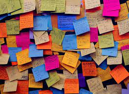
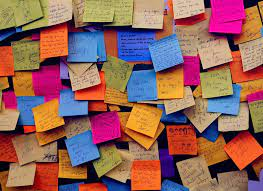

ABOUT ME

Shivanjali More
Team worker ,Quick Learner ,Problem Solver,Firefighter ,Passionate ,creative.
I am Shivanjali Bhalchandra More . Currently studying in 3rd year of Electronics engineering from Karmaveer bhaurao patil college of engineering,satara . With 9.09 CGPA in my 2nd year of engineering. seeking a challenging position in the field of Software so as to expand my skills for Organization and individual growth. I am interested in studying Computer Science because I find it fascinating. I choose computing as my career because of its opening, modernity and lots of challenges... A passionate web developer and having interest in coding with different laguages
like C,C++,HTML and CSS,python.
I love combining the worlds of logic and creative design to make eye-catching,accessible and
user-freindly websites and applications
I'm excited to make the leap and continue refining my skills with the right company.I am outgoing, dedicated,
and open-minded.
I get across to people and adjust to changes with ease. I believe that a person should work
on developing their professional skills and learning new things all the time. Currently, I am looking for new career opportunities
 
